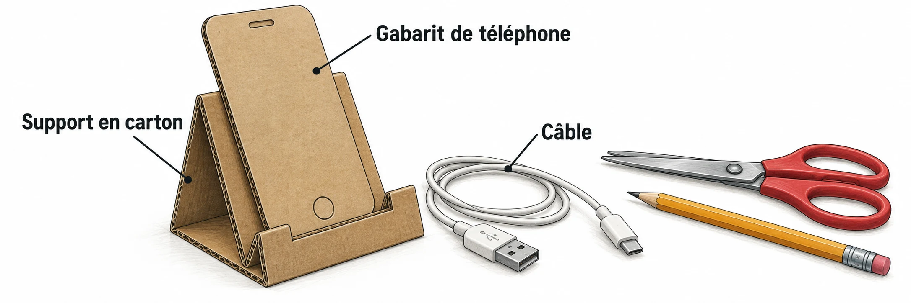

OBSERVER · EXPÉRIMENTER · EXPLIQUER
Un support gagne une nouvelle fonction
Modifie le passage du câble sur le patron. La pièce réelle reste à fabriquer et à tester.

✎ Garde ta feuille à côté de toi.Ordinateur : manipulations et mesures simulées. Papier : relevés, réponses, calculs et croquis. Matériel réel : essai complémentaire si disponible.
Des observations pour expliquer
- Q2 : justifie ton choix à partir des trois exigences.
- Q4 : compare l’encoche initiale et celle demandée ; trace le patron coté sur papier.
Appuie ton explication sur une valeur, un changement observé ou une comparaison. Distingue ce que montre le modèle et ce qui reste à vérifier.